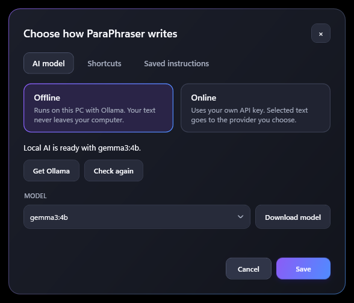

How it works
Teams
hey can u send me the report by friday
First, select text in any app.
Select text, press Ctrl+Alt+R, and read a better version beside your original before anything changes.
Download for WindowsFree and open source. Runs offline, or online with your own key. Windows 10 or 11, 64-bit. 85 MB.
Each action does one job. Scroll to see each one on this example, or choose one.
hey can u send me the report by friday
First, select text in any app.
hey can u send me the report by friday
Then press the shortcut.
hey can u Could you send me the report by friday Friday?
Read what changed beside your words.
Could you send me the report by Friday?
Replace it, or close the window.
Save the way you write once, such as a client email or a team update. Give it a shortcut, and pressing it runs that instruction on your selection straight away.
No menus and no Generate click. Generate is still there when you want to edit the instruction and run it again.
Switch between them in Settings at any time. Either way, nothing replaces your text until you say so.
Offline
Online
ParaPhraser suggests. Nothing replaces your text unless you choose it, and your words go only where you send them.

Short answers to what people ask before installing.
Still wondering about something?
Ask on GitHub (opens in a new tab)The installer isn't code-signed yet, so Windows shows "Windows protected your PC". Choose More info, then Run anyway. The source code is public if you'd like to read it or build it yourself.
In offline mode, it stays on your computer. In online mode, the selected text and your instruction go to the provider you chose. ParaPhraser keeps no history, and its logs never contain your text or keys.
Yes. ParaPhraser is open source under the MIT licence and needs no account. Offline mode costs nothing. In online mode, your provider's own pricing applies to your key.
Most apps where you can copy and paste, such as Notepad, Word, Outlook, Teams, and browsers. Windows blocks it from typing into apps running as administrator, and rich formatting depends on what the app supports.
Yes, one of two things: Ollama for offline mode, or an API key from Anthropic, OpenAI, Google, or OpenRouter. Settings opens on first launch and walks you through it, and can download the offline model for you.
ParaPhraser checks GitHub when it starts, even in offline mode, and downloads new versions in the background. That check contains none of your text, and it won't restart until you choose to. Uninstall it from Windows Settings at any time.
The installer needs no admin rights. When it finishes, Settings opens so you can choose how it writes.
You'll also need Ollama. It's free, and Settings links to it.
Download for Windows